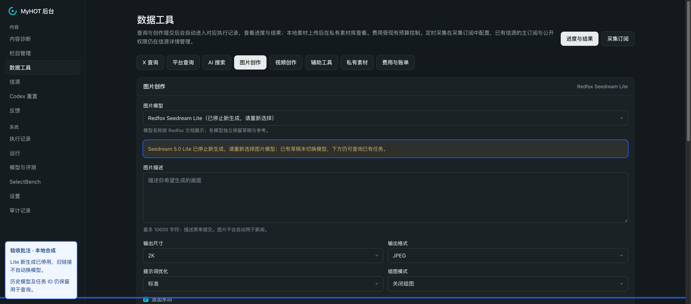
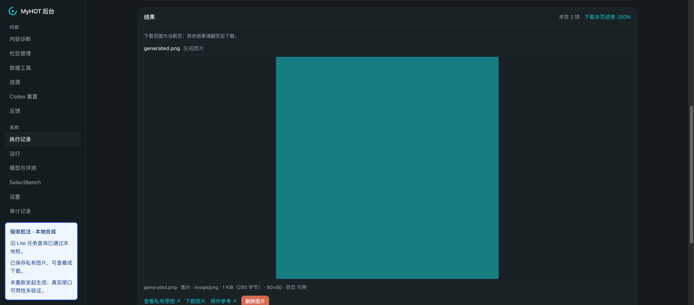
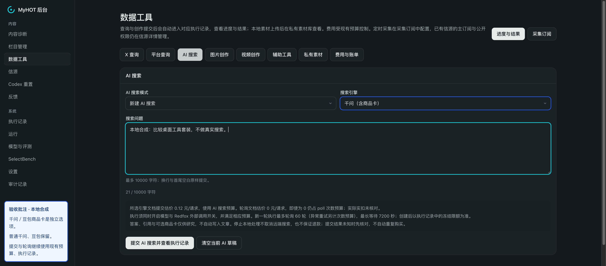

Lite 新建退役、知乎查询与评论快照、千问／豆包商品卡已完成本地验收。188 项相关回归通过，最后提示修正的 41 项复查通过（有重叠）；类型检查及前端构建通过。未调用真实供应商、未提交或部署。
Lite 停止新生成
旧草稿显示停用原因，不自动换模型；保留旧任务查询。

原始截图 · 查看完整批注图
Lite 历史查询与文件
已有任务经本地桩查询完成，私有图片可查看、下载，没有重新生成。

原始截图 · 查看完整批注图
商品卡搜索入口
AI 搜索新增千问／豆包含商品卡选项，普通搜索保留。

原始截图 · 查看完整批注图